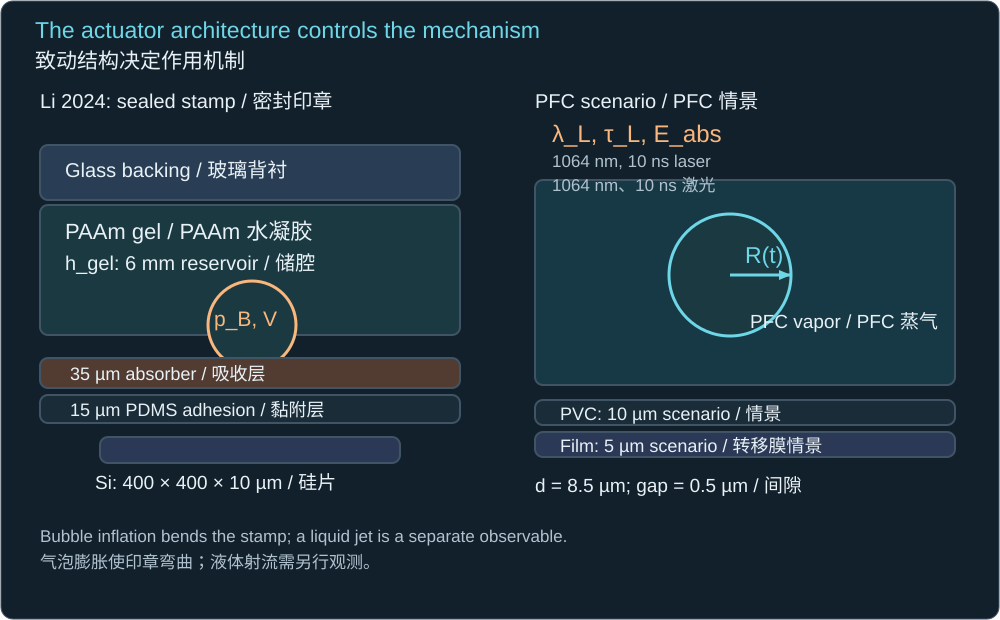
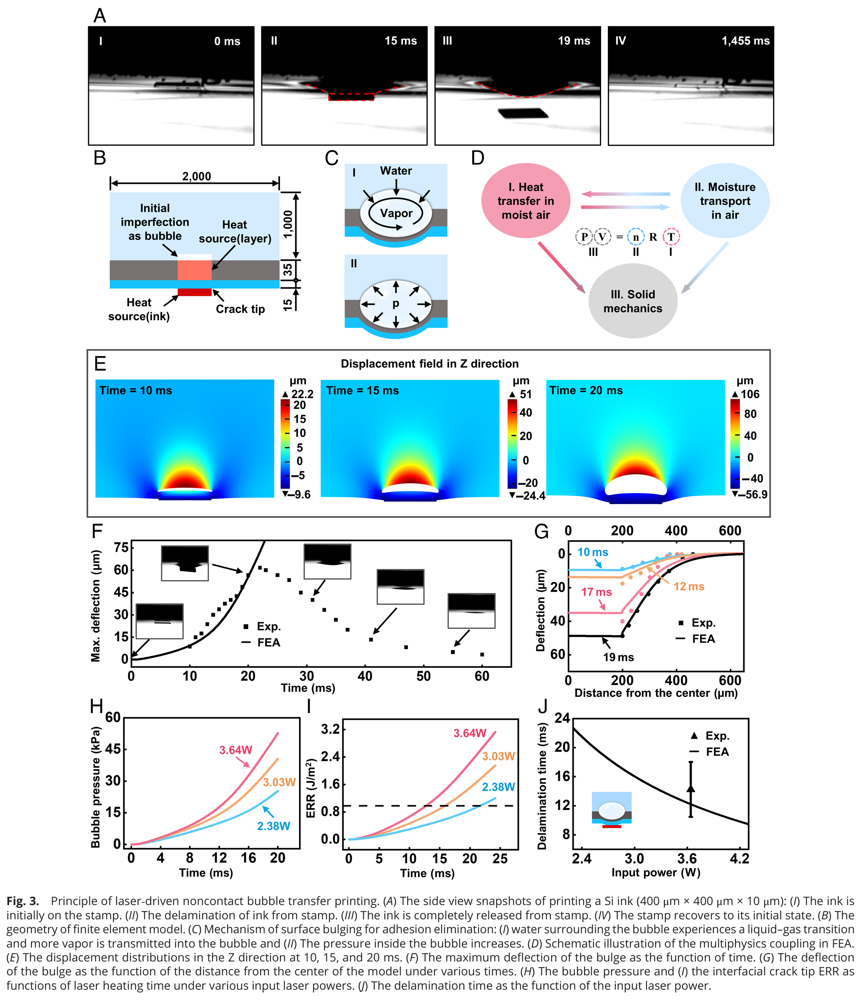
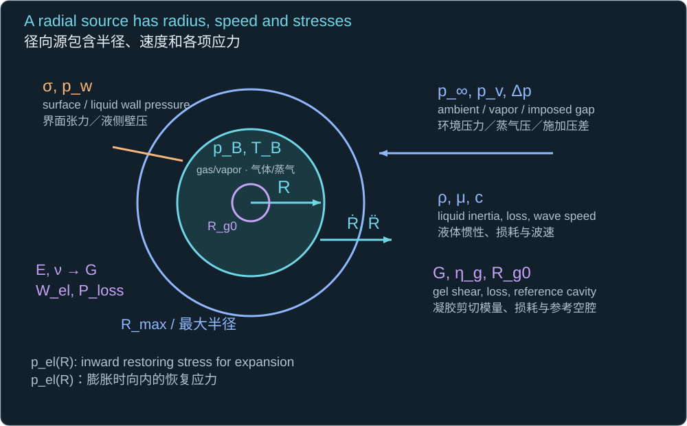
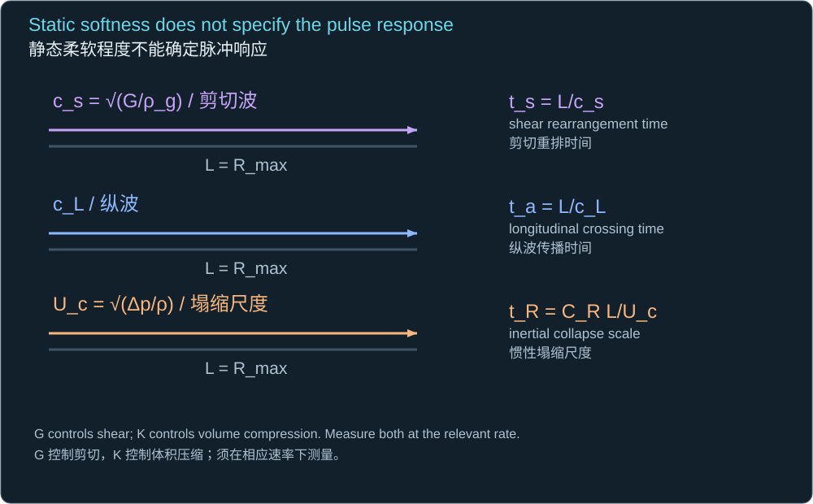
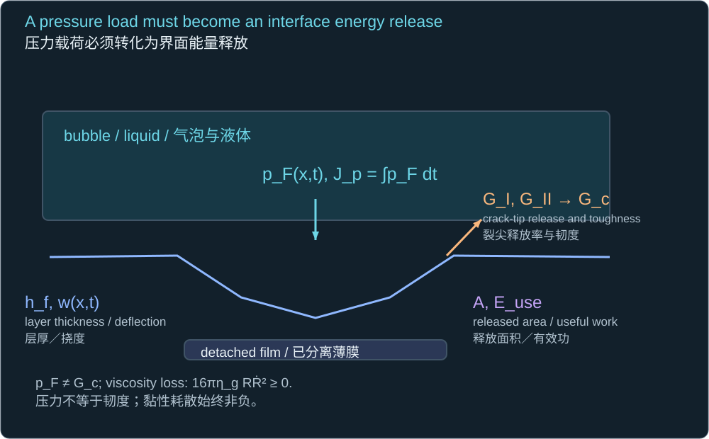
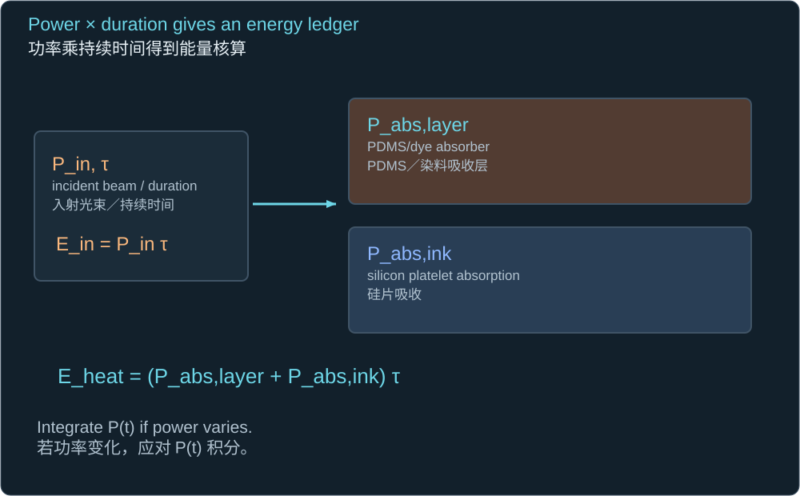

Historical lesson/review. Use the complete textbook course for the current study order. Former Chapters 4 and 5 are now Appendixes A and B.
历史课程／复习材料。当前学习顺序请使用完整教材课程。原第四、五章现为附录 A、B。
Working conclusion: A hydrogel is a plausible design option for compliant pickup, spatial containment, or a sealed bulging actuator. The supplied paper establishes the last mechanism in its millisecond water-vapor stamp. It does not establish that embedding PFC droplets will stabilize a cavitation jet. That proposal must be tested against recoil, damping, altered activation, and gel damage.
当前结论：水凝胶可作为柔顺拾取、空间约束或密封鼓胀致动器的设计选项。所提供论文在毫秒级水蒸气印章中证实了最后一种机制，但并未证实将 PFC 液滴埋入凝胶能稳定空化射流。该设想必须针对回弹、阻尼、激活改变及凝胶损伤进行检验。
1 · Read the actual actuator before transferring its conclusions
1 · 先看真实致动器，再迁移结论
The supplied document is a research article by Chenglong Li and colleagues. Its sealed PAAm reservoir is covered by a 35 µm PDMS/dye absorption layer and a 15 µm PDMS adhesive layer. Laser heating vaporizes water at an initial interfacial defect; pressure enlarges a blister, bends the layers, and releases the silicon ink. This is a bubble-driven stamp bulge and interfacial fracture. A collapsing liquid jet was not the demonstrated printing actuator.
所提供文献是 Chenglong Li 等人的研究论文。密封 PAAm 储腔覆盖 35 µm 的 PDMS／染料吸收层和 15 µm 的 PDMS 黏附层。激光加热使初始界面缺陷处的水汽化；压力扩大鼓泡，使各层弯曲并释放硅片。这里的作用机制是气泡驱动的印章鼓胀与界面断裂。论文展示的印刷致动器并非塌缩液体射流。

The reservoir, absorber, adhesive layer, platelet and current PFC/PVC/film geometry are located separately.
分别标出储腔、吸收层、黏附层、硅片以及当前 PFC／PVC／膜结构。
| Paper observation / 论文观测 | Meaning for the project / 对本项目的意义 |
|---|---|
| 808 nm; 400 µm laser spot; about 20 ms heating 808 nm；400 µm 光斑；约 20 ms 加热 | Different source duration and heated size from 1064 nm, 10 ns, w₀ = 25 µm. 源持续时间和受热尺寸不同于 1064 nm、10 ns、w₀ = 25 µm。 |
| At 3.64 W: delamination begins near 15 ms; complete release near 19 ms. 3.64 W 时约 15 ms 起裂，约 19 ms 完全释放。 | Evidence for this stamp, not a PFC collapse time or jet speed. 这是该印章的证据，并非 PFC 塌缩时间或射流速度。 |
| The fitted effective hydrogel E = 80 kPa reproduces the 19 ms deflection. 拟合的有效凝胶模量 E = 80 kPa 重现 19 ms 挠度。 | It is not an independently measured MHz constitutive law. 它并非独立测得的 MHz 频段本构规律。 |
| PDMS/Si peeling work of adhesion: 0.98 J/m². PDMS／Si 剥离黏附功：0.98 J/m²。 | Measure the actual PVC/film interface and loading rate before reuse. 沿用前须测量真实 PVC／膜界面及对应加载速率。 |

Original Figure 3 from the supplied article: the pressure and fracture curves are FEA outputs, whereas marked deflections and release times include experimental data. The pressure plot is on a kPa scale; it is not a nanosecond hydrophone trace.
所提供论文的原始图 3：压力和断裂曲线为有限元输出，标注的挠度及释放时间包含实验数据。压力图采用 kPa 刻度，并非纳秒级水听器波形。
Li et al. (2024), PNAS, DOI 10.1073/pnas.2318739121 — PDF pp. 2–6, Figure 3 and Methods on p. 9.
2 · What can transfer to a PFC device?
2 · 哪些内容可以迁移到 PFC 装置？
Three ideas can transfer as hypotheses. A compliant backing can improve contact at small preload. A sealed reservoir or patterned pockets can hold the aqueous dispersion at chosen positions. A bubble-induced blister can convert distributed pressure into local peeling, potentially reducing dependence on receiver adhesion. In the paper, silicon pickup at 0.16 kPa preload achieved about 3.2 kPa adhesion; those figures characterize its complete PDMS-covered stamp, not bare hydrogel bonding.
有三种思路可以作为假设迁移：柔顺背衬能在较小预载下改善接触；密封储腔或图案化微腔能将水分散体系固定在选定位置；气泡诱导的鼓泡能将分布压力转化为局部剥离，可能降低对接收体黏附性的依赖。论文在 0.16 kPa 预载下实现约 3.2 kPa 的硅片拾取黏附；这些数值描述的是完整的 PDMS 覆面印章，而不是裸凝胶的黏结。
These benefits come with coupled changes: hydrogel chemistry may change droplet-shell stability and absorber placement; swelling changes gap and layer thickness; confinement adds elastic work; viscoelasticity removes mechanical energy; a stronger pickup interface may cost more energy to release. Retained residual bubbles may shield subsequent pulses. None of these changes can be represented by replacing water viscosity with one larger number.
这些优点伴随耦合变化：水凝胶化学性质可能改变液滴壳层稳定性和吸收体位置；溶胀改变间隙及层厚；约束增加弹性功；黏弹性消耗机械能；更强的拾取界面可能需要更多释放能量。残余气泡还可能屏蔽后续脉冲。这些变化不能仅靠将水黏度替换为一个更大的数来表示。
Li et al. (2024), PNAS, DOI 10.1073/pnas.2318739121 — PDF pp. 3–4, Figure 2; p. 6, fitted modulus and durability discussion.
3 · Put compliant confinement into the radial balance
3 · 将柔顺约束写入径向平衡
For an intact, infinite, incompressible neo-Hookean gel containing an initially stress-free spherical cavity of radius Rg0, the restoring stress below follows finite spherical stretch. A Kelvin–Voigt dashpot adds loss. This is a diagnostic constitutive model: the polymer network is assumed continuous, isotropic and unbroken. A finite liquid pocket, coated droplet, or layered stamp requires a different boundary problem.
对于完整、无限、不可压缩的 neo-Hookean 凝胶，若其中初始半径 Rg0 的球形空腔处于无应力状态，则有限球形伸长给出下述恢复应力。Kelvin–Voigt 黏壶项增加损耗。这是用于诊断的本构模型，假设聚合物网络连续、各向同性且未破裂。有限液腔、包覆液滴或层状印章需要不同的边界问题。
ρ(RR̈ + 3Ṙ²/2) = pB − p∞ − 2σ/R − 4ηgṘ/R − pel(R)

R and its derivatives belong to the wall; G and ηg belong to the gel; pressure and surface tension supply radial stresses.
R 及其导数位于泡壁；G 与 ηg 属于凝胶；压力和界面张力产生径向应力。
pel(R) = (G/2)[5 − 4Rg0/R − (Rg0/R)⁴]
G = E/[2(1 + ν)]
Rg0 is the reference cavity, not automatically the liquid nanodroplet radius; ν here is the fitted low-rate Poisson ratio.
Rg0 是参考空腔半径，不能自动等同于液态纳米液滴半径；此处 ν 为低速率拟合泊松比。
The elastic stress is zero at the reference radius and approaches 2.5G during large expansion. With the paper’s fitted E and ν = 0.48, G ≈ 27.03 kPa. For the explicitly invented cavity reference Rg0 = 1 µm and the inherited R = 8 µm, the restoring stress is 60.81 kPa. That is comparable to the 98.986 kPa ideal collapse pressure gap, so even this modest fitted modulus can matter. It is not a predicted PFC threshold.
弹性应力在参考半径处为零，并在大幅膨胀时趋近 2.5G。采用论文拟合的 E 及 ν = 0.48，得 G ≈ 27.03 kPa。明确假设参考空腔 Rg0 = 1 µm，并采用沿用的 R = 8 µm，恢复应力为 60.81 kPa。它与 98.986 kPa 的理想塌缩压差相当，因此这个看似不大的拟合模量也可能产生明显影响，但这并非预测的 PFC 激活阈值。
Wel = 4π∫R_g0R pel(s)s² ds
Ploss = 16πηgRṘ² ≥ 0
Pressure work stores elastic energy as the cavity expands; the square of speed makes viscous loss positive on both expansion and collapse.
空腔膨胀时压力功储存为弹性能；速度平方使膨胀和塌缩阶段的黏性损耗均为正。
Gaudron, Warnez & Johnsen (2015), JFM, DOI 10.1017/jfm.2015.7 — PDF pp. 5–7, Equations 2.16–2.18; elastic versus viscous terms.
4 · Compare the gel’s response time with the bubble cycle
4 · 比较凝胶响应时间与气泡周期
cs = √(G/ρg)
ts = Rmax/cs
ta = Rmax/cL

Shear speed and longitudinal speed test different responses over the same bubble radius.
剪切波速与纵波速检验同一气泡尺度上的不同响应。
Using G = 27.03 kPa and an assumed gel density of 1000 kg/m³ gives cs = 5.20 m/s and ts = 1.54 µs across 8 µm. The empty-cavity collapse benchmark is 0.735 µs. Thus, a gel can be compliant during slow pickup yet unable to equilibrate shear throughout the same region during the bubble cycle. Its relevant storage and loss moduli must be identified at the strain amplitude and frequency of the event.
采用 G = 27.03 kPa 和假定的凝胶密度 1000 kg/m³，得 cs = 5.20 m/s；跨越 8 µm 的 ts = 1.54 µs。空腔塌缩基准为 0.735 µs。因此，凝胶在缓慢拾取时很柔顺，却可能无法在同一气泡周期内使该区域的剪切响应达到平衡。须在事件对应的应变幅度与频率下识别储能和损耗模量。
Do not infer longitudinal acoustic softness from low static E. A water-rich gel has both polymer shear response and fluid compressibility. The fitted ν = 0.48 from a millisecond FEA model does not establish its nanosecond bulk modulus or acoustic impedance. Likewise, a low wall Mach number during growth does not certify a low Mach number at the final collapse or jet impact.
不能由较小的静态 E 推断纵向声学响应也很柔软。富水凝胶同时具有聚合物剪切响应和液体可压缩性。毫秒有限元模型中拟合的 ν = 0.48，不能确定纳秒级体积模量或声阻抗。同样，生长阶段较低的泡壁马赫数，也不能证明最终塌缩或射流冲击阶段的马赫数较低。
5 · Would a hydrogel stabilize the jet?
5 · 水凝胶会稳定射流吗？
There is no general yes. A compliant boundary can reduce one forcing component, move with the liquid, then recoil and generate another. Brujan and colleagues studied laser bubbles next to a water-rich polyacrylamide gel with E = 0.25 MPa. They observed splitting, jets toward and away from the gel, gel-material ejection, and liquid-jet speeds up to 960 m/s. Their result directly shows that elastic compliance can create strong additional asymmetry.
不能普遍回答“会”。柔顺边界可能减弱某个驱动分量，随液体运动，随后回弹并产生新的驱动。Brujan 等研究了激光气泡与 E = 0.25 MPa 的富水聚丙烯酰胺凝胶之间的相互作用，观察到气泡分裂、朝向与背离凝胶的射流、凝胶材料喷出，以及最高 960 m/s 的液体射流。这直接说明弹性柔顺性可能产生强烈的新非对称性。
Brujan et al. (2001), JFM, DOI 10.1017/S0022112000003347 — PDF p. 1 abstract and jet-direction/penetration results.
A September 2026 numerical study by Wu et al. treats a polymer-bearing liquid near a rigid wall using finite-extension polymer stresses. Its abstract reports changed needle-jet regimes, peak velocities and wall pressures. This concerns bulk-fluid viscoelasticity; an adjacent elastic gel adds a moving boundary. We checked the publisher abstract only and inherit no quantitative gain. Neither mechanism gives a general stability guarantee.
Wu 等于 2026 年 9 月发表的数值研究用具有有限伸长的聚合物应力处理刚壁附近的含聚合物液体。其摘要报告了针状射流形态区间、峰值速度及壁压的变化。这里讨论体相流体黏弹性，而邻近弹性凝胶引入运动边界。我们仅核查了出版社摘要，未沿用任何定量增益。两种机制都不能给出一般性的稳定保证。
“Stable” should mean a measured reduction in angular spread, speed variation, breakup, or footprint variation at a useful mean load—not merely a visually smaller bubble. A bulk-gel bubble also has no open liquid path until a cavity, channel, or fracture exists; a moving gel fragment must not be classified as a liquid jet. The most useful initial comparison holds local absorbed dose, droplet batch and geometry fixed, then measures the bubble contour, gel/film motion, jet axis and pressure in the same shot.
“稳定”应指在具有实用平均载荷的前提下，实测射流角度离散、速度变异、破碎或作用区域变异减少，而不是气泡看起来更小。体相凝胶中的气泡也只有在空腔、通道或裂纹存在后才有开放液体通路；运动的凝胶碎片不能被归类为液体射流。最有用的初始比较应固定局部吸收剂量、液滴批次和几何，并在同一次事件中测量气泡轮廓、凝胶／薄膜运动、射流轴向及压力。
6 · Choose an architecture that isolates the useful effect
6 · 选择能分辨有效作用的结构
| Architecture / 结构 | Potential benefit / 潜在优点 | Main new uncertainty / 主要新增不确定性 |
|---|---|---|
| PFC droplets dispersed inside a gel PFC 液滴分散在凝胶内部 | Less liquid drift; spatial immobilization 减少液体漂移；空间固定 | Polymerization, shell chemistry, large-strain damage and restricted flow 聚合、壳层化学、大应变损伤及流动受限 |
| Liquid microreservoir bounded by gel and a membrane 由凝胶及膜围成的液体微储腔 | Retains a liquid bubble path while controlling position and compliance 保留液态气泡通路，同时控制位置与柔顺性 | Membrane inertia, sealing, pocket resonance and gas accumulation 膜惯性、密封、微腔共振及气体积累 |
| Gel backing outside the existing liquid/PVC/film region 现有液体／PVC／膜区域外部的凝胶背衬 | Cleanest first comparison of mechanical backing response 首先比较机械背衬响应时，影响因素最清楚 | Traction transmission, support geometry and rate dependence 牵引力传递、支撑几何及速率效应 |
For this project, start with the separated backing or a defined liquid pocket if the goal is to isolate mechanical compliance. Treat this as a research sequence, not a validated material selection. Characterize absorption and PFC size/shell survival before and after gel exposure; then vary gel mechanics while preserving optical deposition. Compare synchronous bubble/jet/film records, release probability, placement error and damage over independent specimens. Repeated pulses need a separate residual-state analysis.
对于本项目，若目标是辨别机械柔顺性的作用，可先采用分离背衬或明确几何的液腔。这是研究顺序，并非已经验证的材料选型。应在接触凝胶前后表征吸收、PFC 尺寸及壳层存活，再在保持光学沉积一致时改变凝胶力学性质。对独立样品比较同步的气泡／射流／薄膜记录、释放概率、定位误差及损伤。重复脉冲需要另行分析残余状态。
7 · Useful release is an energy-and-fracture problem
7 · 有效释放属于能量与断裂问题
GI + GII ≥ Gc(mode mix, rate)
Euse ≤ ηuseEabs
Wsep ≥ ∫AGc dA

The crack-edge energy release criterion and total separation-work budget differ from fluid pressure. A measured mixed-mode law replaces the schematic additive criterion when needed.
裂尖能量释放条件及总分离功预算均不同于液体压力；必要时应以实测混合模态规律替换示意的相加准则。
For a 400 µm square platelet and the paper’s 0.98 J/m² adhesion work, complete separation requires at least 156.8 nJ if that value applies across the entire area. The inherited absorbed pulse is 294.52 nJ, but a hypothetical 10% useful-mechanical fraction supplies only 29.45 nJ. This necessary work comparison does not predict crack onset, release timing or launch speed. A more compliant stamp can help the crack geometry while also consuming or dissipating energy.
若硅片为边长 400 µm 的正方形，且论文的 0.98 J/m² 黏附功适用于整个区域，完全分离至少需要 156.8 nJ。沿用的吸收脉冲为 294.52 nJ，但假定只有 10% 成为有效机械能时，仅有 29.45 nJ。这个必要的功预算比较不能预测起裂、释放时刻或发射速度。更柔顺的印章可能改善裂纹几何，同时也会储存或耗散能量。
Integrated problem · Evaluate a hydrogel modification
综合计算题 · 评估水凝胶改造
All numerical gel-cavity and efficiency choices below are teaching assumptions. Paper values and inherited optical values are labeled in the questions. Open each reference answer after attempting that part.
以下凝胶空腔及效率数值均为教学假设。各小题明确区分论文数值与沿用的光学情景。尝试每一部分后可展开参考答案。
1. Using 3.64 W for 20 ms and absorbed powers 0.34 W plus 0.26 W, compute incident and absorbed heating energies. Compare the latter with 0.29452 µJ. Can this paper validate the PFC nanosecond operating point?
1. 采用 3.64 W、20 ms，以及 0.34 W 与 0.26 W 的吸收功率，计算入射及吸收加热能量。将后者与 0.29452 µJ 比较。该论文能否验证 PFC 纳秒工作点？
Reference answer / 参考答案
Ein = Pinτ
Eheat = (Pabs,layer + Pabs,ink)τ
Power integrated over the stated heating duration gives an energy, not a pressure.
将功率按指定加热时间积分得到能量，而不是压力。
Incident: 3.64 × 0.020 = 0.0728 J = 72.8 mJ. Absorbed: 0.60 × 0.020 = 12.0 mJ, about 4.074 × 10⁴ times the inherited assumed absorption. No: source timescale, absorbed geometry, phase species and interface differ. The 20 ms multiplication is a ledger for a declared duration; actual absorbed power should be integrated if it varies.
入射能量：3.64 × 0.020 = 0.0728 J = 72.8 mJ。吸收能量：0.60 × 0.020 = 12.0 mJ，约为沿用假定吸收能量的 4.074 × 10⁴ 倍。不能验证：源时间尺度、吸收几何、相变物种及界面不同。乘以 20 ms 只是对所给持续时间的核算；若实际吸收功率变化，应进行时间积分。
2. Take the fitted E = 80 kPa, ν = 0.48, an invented stress-free cavity radius 1 µm, and current radius 8 µm. Calculate G, the neo-Hookean restoring pressure, and its large-expansion limit.
2. 取拟合的 E = 80 kPa、ν = 0.48、假设的无应力空腔半径 1 µm，以及当前半径 8 µm。计算 G、neo-Hookean 恢复压力及其大膨胀极限。
Reference answer / 参考答案
G = E/[2(1 + ν)]
pel = (G/2)[5 − 4Rg0/R − (Rg0/R)⁴]The reference radius determines gel stretch; it is explicitly supplied for this exercise.
参考半径决定凝胶伸长；本题明确给定该值。
G = 80/[2(1.48)] = 27.027 kPa. The bracket is 5 − 4/8 − (1/8)⁴ = 4.499756; pel = 60.808 kPa. The limit is 2.5G = 67.568 kPa. It resists expansion. The associated ideal elastic work from 1 to 8 µm is 0.12308 nJ, obtained by integrating the pressure work; the assumption requires an intact network.
G = 80/[2(1.48)] = 27.027 kPa。括号内为 5 − 4/8 − (1/8)⁴ = 4.499756，故 pel = 60.808 kPa。极限为 2.5G = 67.568 kPa，作用是抵抗膨胀。从 1 到 8 µm 的理想弹性功为 0.12308 nJ，由压力功积分得到；该假设要求网络完整。
3. With ρg = 1000 kg/m³ and G from Part 2, calculate the shear crossing time over 8 µm. Compare it with ideal collapse time using ρ = 998.2 kg/m³, p∞ = 101325 Pa and pv = 2339 Pa.
3. 采用 ρg = 1000 kg/m³ 和第二小题的 G，计算跨越 8 µm 的剪切传播时间。采用 ρ = 998.2 kg/m³、p∞ = 101325 Pa、pv = 2339 Pa，比较它与理想塌缩时间。
Reference answer / 参考答案
cs = √(G/ρg)
ts = Rmax/cs
tR = 0.914681Rmax√[ρ/(p∞ − pv)]Use the same 8 µm length while keeping gel shear density and liquid collapse density distinct.
采用相同的 8 µm 长度，但区分凝胶剪切密度与液体塌缩密度。
cs = √(27027/1000) = 5.199 m/s; ts = 1.539 µs. Δp = 98986 Pa, giving tR = 0.73482 µs. Shear equilibration takes about 2.09 times this ideal collapse interval. This comparison questions instantaneous shear equilibration; it does not establish damping, jet direction or high-frequency longitudinal impedance.
cs = √(27027/1000) = 5.199 m/s；ts = 1.539 µs。Δp = 98986 Pa，故 tR = 0.73482 µs。剪切平衡时间约为这个理想塌缩区间的 2.09 倍。该比较使瞬时剪切平衡假设值得怀疑，但不能确定阻尼、射流方向或高频纵向声阻抗。
4. An explicitly assumed Kelvin–Voigt viscosity ηg = 0.010 Pa·s acts at R = 4 µm and Ṙ = −20 m/s. Compute the signed viscous pressure and instantaneous dissipation power.
4. 明确假定 Kelvin–Voigt 黏度 ηg = 0.010 Pa·s，当前 R = 4 µm、Ṙ = −20 m/s。计算带符号黏性压力及瞬时耗散功率。
Reference answer / 参考答案
pvisc = −4ηgṘ/R
Ploss = 16πηgRṘ²Viscosity opposes inward wall speed, but mechanical energy is dissipated regardless of the velocity sign.
黏性抵抗向内泡壁运动；无论速度正负，机械能都会耗散。
pvisc = −4(0.010)(−20)/(4 × 10⁻⁶) = +200 kPa. Ploss = 16π(0.010)(4 × 10⁻⁶)(400) = 0.804 mW. This viscosity is invented for practice and is not a value reported by Li et al. A positive signed pressure contribution during collapse represents resistance to collapse, not negative dissipation.
pvisc = −4(0.010)(−20)/(4 × 10⁻⁶) = +200 kPa。Ploss = 16π(0.010)(4 × 10⁻⁶)(400) = 0.804 mW。该黏度为练习设定，并非 Li 等人报告的数值。塌缩时正的压力贡献表示抵抗塌缩，不是负耗散。
5. For a 400 µm square interface with Gc = 0.98 J/m², calculate complete-area separation work. Would 10% of the inherited absorbed energy meet that necessary budget? Would meeting it prove release?
5. 对边长 400 µm、Gc = 0.98 J/m² 的正方形界面，计算全区域分离功。沿用吸收能量的 10% 是否满足这个必要预算？满足预算是否就能证明释放？
Reference answer / 参考答案
A = L²
Wsep,min = GcA
Euse = ηuseEabsGc is an interface energy per area; A is the separated footprint, and ηuse is a declared useful-work fraction.
Gc 为单位面积界面能；A 为分离区域；ηuse 为明确假设的有效功比例。
A = (400 × 10⁻⁶)² = 1.6 × 10⁻⁷ m². Wsep,min = 156.8 nJ. Euse = 0.10 × 294.524 = 29.45 nJ; the ratio is 0.188, below the necessary budget. Meeting the budget would still require the correct crack-edge energy release, mode/rate law, load distribution and energy partition. This adhesion value is not assigned to the project interface.
A = (400 × 10⁻⁶)² = 1.6 × 10⁻⁷ m²。Wsep,min = 156.8 nJ。Euse = 0.10 × 294.524 = 29.45 nJ；比值为 0.188，低于必要预算。即使满足预算，仍需正确的裂尖能量释放、模态／速率规律、载荷分布及能量分配。这个黏附值不能直接赋予项目界面。
6. Select one architecture for a first controlled comparison. Name a plausible benefit, a mechanism that could make jet variability worse, and the observations that decide between them.
6. 为首次受控比较选择一种结构。指出一项潜在优点、一种可能增大射流变异的机制，以及区分两者所需的观测。
Reference answer / 参考答案
A separated gel backing is a useful first mechanical comparison because it changes the support while preserving the liquid formulation. It may improve contact or make a repeatable peeling geometry; delayed boundary recoil may instead change jet direction or produce a second jet. Match measured absorbed dose and record bubble shape, backing/film displacement, jet angle and speed, and a calibrated pressure trace on the same shot. Compare variability and transfer outcomes across independent shots, not just the mean or one visually successful event.
分离的凝胶背衬适合首次机械比较，因为它改变支撑而保留液体配方。它可能改善接触或形成可重复的剥离几何；延迟的边界回弹也可能改变射流方向或产生第二股射流。应匹配实测吸收剂量，在同一次事件中记录气泡形状、背衬／薄膜位移、射流角度和速度，以及标定后的压力波形。对独立事件比较变异程度和转移结果，不能只比较平均值或一次看起来成功的事件。
Brief synthesis: In two or three sentences, say whether the hydrogel paper supports trying a compliant PFC device, whether it proves jet stabilization, and which synchronized observation would decide the mechanism.
简短综合检查：用两三句话说明：水凝胶论文是否支持尝试柔顺的 PFC 装置，是否证明射流稳定，以及哪项同步观测能够判定机制。
Reference answer / 参考答案
It supports exploring compliant pickup and a sealed bubble-driven peeling actuator, while the laser/phase timescales require a new dynamic closure for PFC. It does not prove jet stabilization: elastic rebound may create or redirect fast jets. Synchronize the bubble contour, gel/film motion, jet geometry and pressure with optical dose, then compare independent-shot variability and release.
它支持探索柔顺拾取与密封气泡驱动的剥离致动器，但激光／相变时间尺度不同，因此 PFC 需要新的动态闭合关系。它并未证明射流稳定：弹性回弹可能产生或重新定向高速射流。应将气泡轮廓、凝胶／薄膜运动、射流几何及压力与光学剂量同步记录，再比较独立事件的变异与释放。